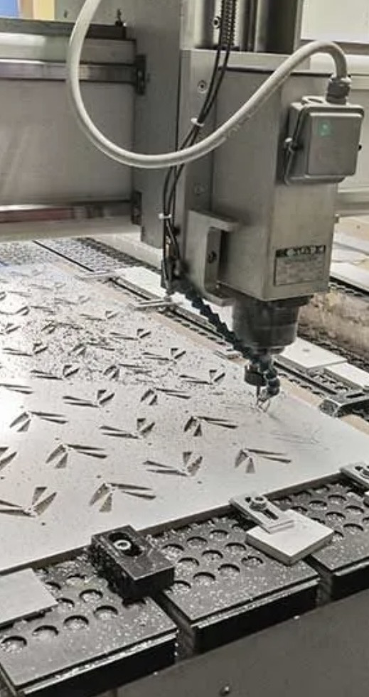

GravureLaser & fraisage
Moules, plaques, tampons, trophées… deux techniques opérées en atelier : laser et gravure en creux.
En savoir plusGraveur & imprimeur depuis 1966
Gravure laser & fraisage, découpe industrielle, impression numérique et signalétique sur mesure. De la pièce unique à la série, notre atelier de Kingersheim accompagne commerces et industriels près de Mulhouse.
Notre solution, notre savoir-faire
Technique artisanale et nouvelles technologies : gravure de précision, marquage industriel, découpe et usinage de pièces sur métal, acier, titane, laiton…
Moules, plaques, tampons, trophées… deux techniques opérées en atelier : laser et gravure en creux.
En savoir plusÉléments métalliques et accessoires mécaniques de précision : moules, matrices, poinçons.
En savoir plusObjets publicitaires, marquage industriel, panneaux et signalétique intérieure & extérieure.
En savoir plusConception et impression de signalétiques, stickers et films adhésifs sur mesure pour vos locaux.
En savoir plusEntreprise familiale fondée en 1966
De la conception au prototype jusqu'à la réalisation, nous respectons vos exigences et vos délais. Industriels de la chimie, de l'aéronautique navale ou de l'automobile : confiez-nous vos pièces spécifiques.

Ils nous font confiance
Adhésifs, impressions publicitaires, gravures, pièces industrielles… Confiez-nous votre projet, notre bureau d'études vous répond rapidement.
Demandez-nous votre devis